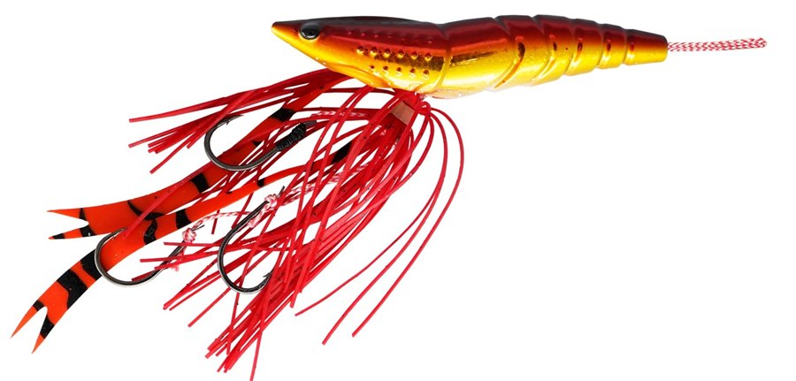
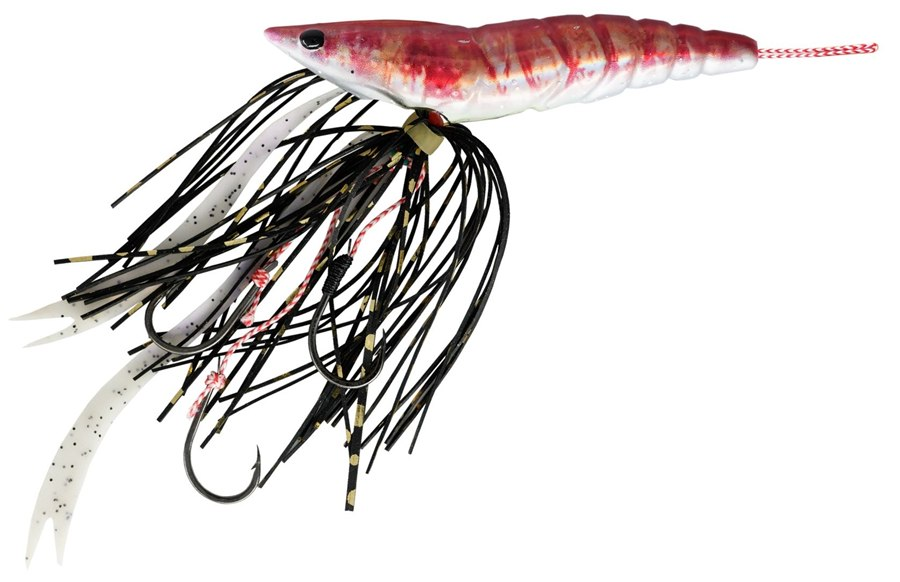
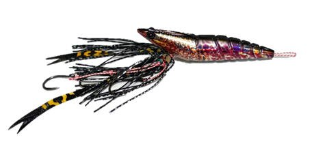
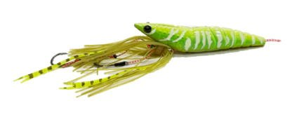

海老ラバ
海老ラバはREAL FISHER（リアルフィッシャー）のタイラバ（エビ型）です。
テンヤとタイラバの融合＝海老ラバ。主なターゲットはマダイで、キジハタ（アコウ）などの根魚や青物、フラットフィッシュも狙えます。
遊漁船の船長が現場で作ったエビ型のタイラバ。そのままタイラバとして使えるうえに、フックに活きエビや冷凍エビ、イソメなどを付ければ一つテンヤのようにも使える、ハイブリッド型のタイラバです。

画像出典:REAL FISHER公式HP
スペック
- メーカー
- REAL FISHER（リアルフィッシャー）
- タイプ
- エビ型タイラバ（タイラバ・一つテンヤ両対応）
- ウエイト
- 45g／60g／80g／100g／120g／150g／200g
- フック
- 海老ラバ専用の段差孫針仕様
- カラー
- 全12色
- ターゲット
- マダイ・キジハタ（アコウ）・根魚・青物など
- 価格
- 1,280円（45g）〜1,900円（200g）（税抜・メーカー希望小売価格。特注カラーは＋100円）
▼今すぐチェック

海老ラバの特徴
1つでタイラバにも一つテンヤにもなる、2WAYのエビ型タイラバ
-
タイラバと一つテンヤの2WAY
パッケージから出したままならタイラバとして、フックにエサを付ければ一つテンヤのように使える。もともとエビの形で魚を引き寄せるうえに、エサの集魚力も足せる。
-
ローリングを抑えた泳ぎ
低速〜中速のただ巻きではローリングを抑え、低活性の時でもバイトを誘う。
-
エサを付けやすい段差孫針
海老ラバだけの段差孫針仕様で、活きエビや冷凍エビ、イソメ系はもちろん、ワームなどのトレーラーを付けてもホールド性がいい。
海老ラバの使い方
基本はタイラバと同じで、着底したらすぐに巻き上げ、一定の速さで巻いて誘います。
食いが渋い時や、冬から春先の低水温期は、フックにエビやイソメを付けて一つテンヤのように使うのが効果的です。反応がない時は、巻く速さをゆっくりにしてみましょう。
海老ラバの得意な状況
船からのタイラバでマダイを狙う時が得意です。食いの渋い冬から春先は、エサを付けるハイブリッドな使い方が活きます。
キジハタ（アコウ）などの根魚や、青物・フラットフィッシュも釣れるので、いろいろな魚が混じる海域でも使いやすいタイラバです。
ワンポイント
フックが鈍った時やカラーを替えたい時のために、S・M・Lサイズ共通の「海老ラバ 替えラバーフック」（6色）も出ています。
海老ラバのウエイトと価格
| ウエイト | 希望小売価格（税抜） | 特注カラー（税抜） |
|---|---|---|
| 45g | 1,280円 | 1,380円 |
| 60g | 1,350円 | 1,450円 |
| 80g | 1,450円 | 1,550円 |
| 100g | 1,520円 | 1,620円 |
| 120g | 1,580円 | 1,680円 |
| 150g | 1,680円 | 1,780円 |
| 200g | 1,900円 | 2,000円 |
※公式のカタログより。特注カラーはケイムラアカエビ・ケイムラクルマエビ・イセエビブラック・パープルクルマエビ・ケイムラアマエビグロー・ケイムラボタンエビグローの6色です。水深や潮の速さで、底が取れる重さを選びましょう。
オススメカラー
海老ラバは全12色。そのうち4色を紹介します（画像は公式より）。

アカキン（レッドテール）タイラバの定番、赤×金。まず1つ選ぶならこの色。

ケイムラアカエビ（アカエビテール）ケイムラ入りのリアルなエビカラー（特注カラー）。

イセエビブラック（イセエビテール）黒系のシルエットカラー（特注カラー）。

チャートクルマエビグローチャートとグローで目立つアピール系。
画像出典:REAL FISHER公式HP
海老ラバに似ているルアー
-
 魚子ラバ
RUDIE'S
詳細はこちら＞
魚子ラバ
RUDIE'S
詳細はこちら＞
マイクロタイラバ。
-
 ハタ喰い・蝦
RUDIE'S
詳細はこちら＞
ハタ喰い・蝦
RUDIE'S
詳細はこちら＞
エビ型ワーム。根魚狙いに。
-
 ハイブリッド クロス
マルキユー
詳細はこちら＞
ハイブリッド クロス
マルキユー
詳細はこちら＞
テンヤに付ける人工のくわせエサ。